Sprites
Sprites are flat images capable of animation used by particle effects. They are defined by a texture and mappings for one or more frames within that texture.
texture "<file path>"
sprite 0 <x> <y> <width> <height>
...
sprite <N> <x> <y> <width> <height>The top-left of the texture is at 0 0, and width and height extend right and down.
Coordinates refer to the top-left corner of texels, rather than their center. For example, this texture and definition should result in a white square that fades to transparent at its edges, but instead it appears in-game as the screenshot on the right:

sprite 0 2 2 3 3You can't correct for this because coordinates and dimensions are truncated to integers (e.g., 2.5 becomes 2), but you can mitigate it by adding extra transparent space around frames in the texture.
Texture mapping is clamped to the edges. Mapping outside the texture will repeat the outer texels:
sprite 0 -8 -8 24 24